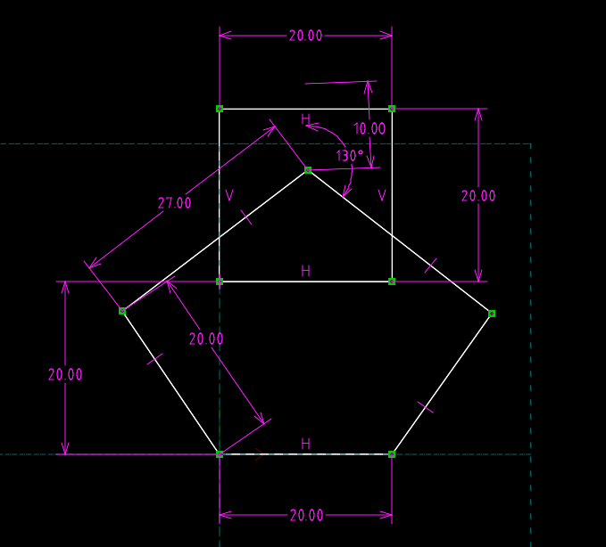
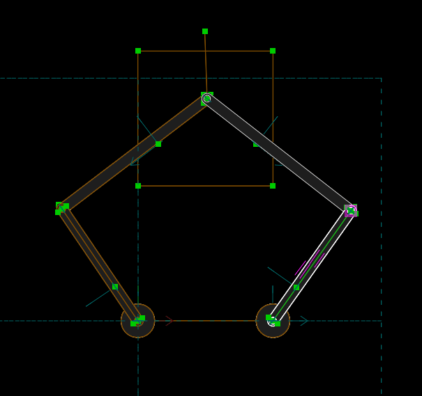
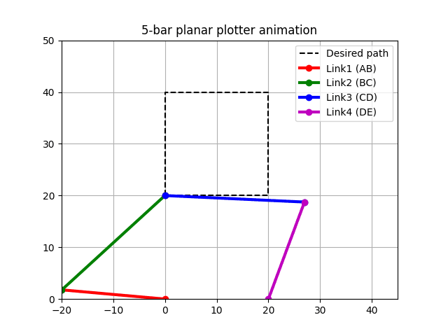
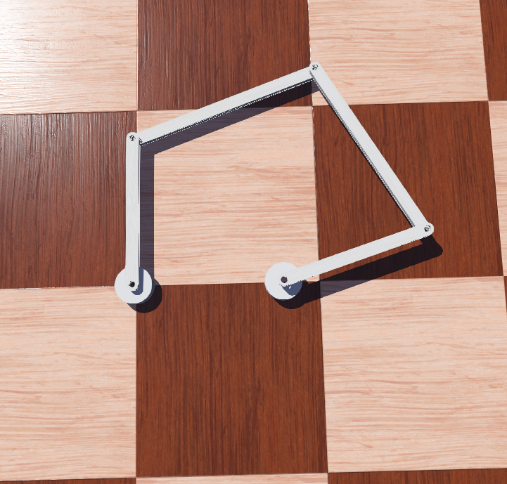
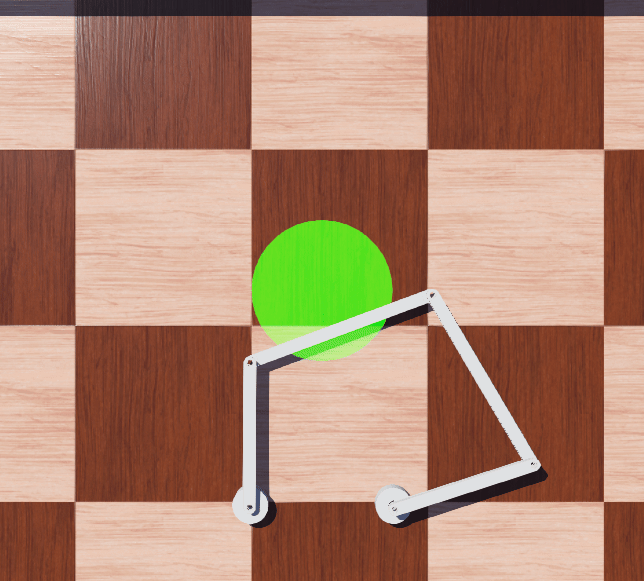
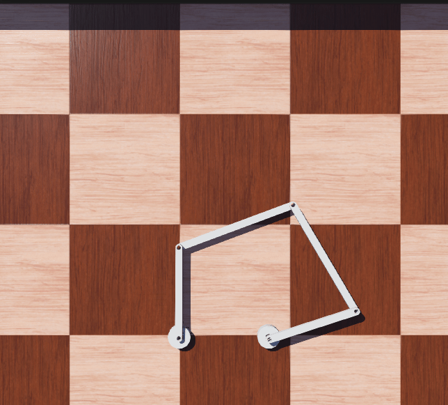

Design <<
Previous Next >> 自由度
Plotter
設計要求:
使用平面五連桿設計一套能夠在 20cm x 20cm 範圍中進行繪圖的畫圖機
驅動: NEMA 17 步進馬達或 STS3215 系列伺服馬達
首先查詢 NEMA 17 步進馬達與STS3215 系列伺服馬達的規格尺寸。
17 NE2: 42.3mmx42.3mmx34mm (from https://www.sumfu.com/step/nema17)
STS3215: 45.23mmx24.73mmx29mm (from FeeTech)
平面五連桿 plotter 自由度如何計算?
計算「平面五連桿機構（Five-bar linkage）」的自由度（Degrees of Freedom, DOF）可以使用「Gruebler-Kutzbach 方程式」來處理。
平面機構的自由度 = 3(包含地面的構件數 - 1) - 2(有一個自由度的接頭數) - 有兩個自由度的接頭數
因此平面五連桿的自由度 = 3(5-1) - 2(5) - 0 = 2，因此設計中的 Plotter 有兩個自由度。
以下使用基因演算法進行尺寸設計:
五連桿機構設計最佳化：最小化連桿尺寸
本設計的目標是針對一組 20 cm × 20 cm 的繪圖區域，尋找並最佳化三個核心設計變數：連桿 L1、連桿 L2，以及底部距離 distance。最終目的是在確保機構穩定運行的前提下，找到能使連桿尺寸最小化（即材料成本與運動慣性最低）的設計。
一、幾何參數設定
A. 待最佳化設計變數：
1. L1：主連桿/驅動連桿長度（L1 = L4）。
2. L2：副連桿長度（L2 = L3）。
3. distance：機構底部距離（定義馬達中心連線到繪圖區域底邊的垂直距離）。
B. 固定參數：
1. 馬達間距 (LENGTH)：兩側連桿（L1 和 L4）的固定轉軸中心必須保持 20 cm 的水平間距。
2. 繪圖區域 (W×H)：機構必須能覆蓋一個 20 cm 寬度和 20 cm 高度的完整矩形區域。
3. 對稱性要求：機構必須保持對稱，即 L1=L4 且 L2=L3。
二、最小化優化目標 (Objective)
設計應追求連桿總尺寸的最小化。優化目標 J 定義為：
最小化 J = 1.0 * L1 + 1.0 * L2 + 0.5 * distance
（此權重分配旨在優先最小化連桿長度 L1 和 L2，同時適度控制機構的底部高度 distance。）
三、運動學與工程約束 (Constraints)
設計結果必須嚴格滿足以下三個工程約束，以確保筆尖 C 點在整個繪圖區域內不會遇到死點或不可達的情況。
C1. 可達性與外側奇異點迴避 (L1+L2 約束)
連桿 L1 與 L2 的長度總和必須大於機構在繪圖區域最遠點所需的最大距離 Dmax。
目的：保證筆尖在最遠處不會發生連桿 L1 和 L2 完全伸直共線（外側奇異點）導致的鎖死。
約束式：L1 + L2 > Dmax
C2. 繪圖區域穩定性與內側奇異點迴避
連桿 L2 的兩倍長度 (2 * L2) 必須大於筆尖 C 點在整個 20 cm × 20 cm 繪圖區域內時，點 B 到點 D 之間的最大距離 Max(DBD)Area。
安全裕度：必須強制加入 1.0 cm 的安全裕度 (Δ)。
目的：保證筆尖在任何位置都不會發生連桿 L2 和 L3 完全伸直共線（內側奇異點）導致的控制失效。
約束式：2 * L2 > Max(DBD)Area + 1.0 cm
C3. 轉軸方向約束 (Y 座標約束)
在求解逆運動學時，連桿 L1 和 L4 的擺動點 B 點和 D 點的垂直坐標 (YB 和 YD) 必須始終大於或等於零。
目的：確保機構在整個工作過程中始終處於轉軸上方（上搖桿解）的穩定配置，防止機構翻轉至下方區域。
約束式：YB >= 0 且 YD >= 0
redesign_ga1.py
選用下列設計:
A 點座標 (0, 0) 為 5-bar planar plotter 的左邊馬達位置, 其轉動角度以逆時針為正, 轉角設為 t1, 且從其右邊的水平線算起
E 點座標 (20, 0) 為右邊馬達位置, 其轉動角度也是以逆時針為正, 轉角設為 t2, 也是從其右邊的水平線算起
AB 為 link1 長度為 20, BC 為 link2 長度為 27, CD 為 link3 長度為 27, DE 為 link4 長度為 20, C 點為 plotter 擺放位置
請利用數值方法推導 def t1(cx, cy) 以及 t2(cx, cy), 其中 cx 為 plotter C 點的 x 座標, 而 cy 則為 plotter C點的 y 座標
redesign.slvs
redesign.py
verify_20_40.py
redesign.7z
redesign_simulation.py
plotter_redesign.7z (含初步 Webots 場景)
修正起始角度的 Webots 場景: plotter_redesign_w6.7z
利用影像辨識導引繪圖: plotter_redesign_w7.7z
Prompt:
A 點座標 (0, 0) 為 5-bar planar plotter 的左邊馬達位置, 其轉動角度以逆時針為正, 轉角設為 t1, 且從其右邊的水平線算起
E 點座標 (0.2, 0) 為右邊馬達位置, 其轉動角度也是以逆時針為正, 轉角設為 t2, 也是從其右邊的水平線算起
AB 為 link1 長度為 0.2, BC 為 link2 長度為 027, CD 為 link3 長度為 0.27, DE 為 link4 長度為 0.2, C 點為 plotter 擺放位置
請利用 sympy 方法推導 def t1(cx, cy) 以及 t2(cx, cy), 其中 cx 為 plotter C 點的 x 座標, 而 cy 則為 plotter C點的 y 座標
最後結果請給出四種 solutions 的 python function 格式






Design <<
Previous Next >> 自由度